Introducción
¿Qué es OAI-Processor?
OAI-Processor es una aplicación desarrollada por Corrosion Labs para procesar, organizar y exportar las conversaciones y recursos de ChatGPT a formatos que permitan consultarlos y conservarlos fuera de la plataforma de OpenAI.
El programa trabaja con copias de seguridad locales, especialmente las obtenidas mediante OAI-Downloader, y permite transformar su contenido en documentos organizados, conservando la estructura de proyectos, conversaciones y recursos asociados.
Su funcionamiento se divide en dos etapas principales e independientes:
1. Procesamiento de la información
En esta primera etapa, OAI-Processor analiza los datos de la copia de seguridad y los prepara para su posterior exportación.
El programa identifica los proyectos y conversaciones, organiza sus contenidos y establece las relaciones con los recursos asociados, como imágenes, archivos de audio, vídeos y documentos.
El resultado es una estructura de información procesada que puede reutilizarse en distintas exportaciones sin necesidad de repetir todo el procesamiento.
2. Exportación a diferentes formatos
Una vez procesada la información, OAI-Processor permite exportarla al formato de destino seleccionado.
Actualmente dispone de dos opciones:
Obsidian: genera documentos Markdown organizados para su integración en una vault de Obsidian, conservando las relaciones entre conversaciones, proyectos y recursos.
HTML: genera una versión de los contenidos en formato HTML para su consulta fuera de ChatGPT.
Durante la exportación pueden configurarse distintas opciones, como la selección de recursos, la conversión de archivos multimedia o la personalización de determinados elementos del contenido.
¿Por qué separar el procesamiento y la exportación?
Esta separación es una característica fundamental de OAI-Processor.
Procesar significa preparar la información. Exportar significa decidir cómo y dónde utilizarla.
Gracias a ello, una misma copia de seguridad procesada puede exportarse varias veces, a diferentes formatos o destinos, sin tener que reconstruir toda la información desde el principio.
OAI-Processor permite así transformar un backup de ChatGPT en un archivo documental organizado, consultable y gestionable por el usuario, sin depender de la interfaz original de OpenAI.
Inicio y configuración inicial
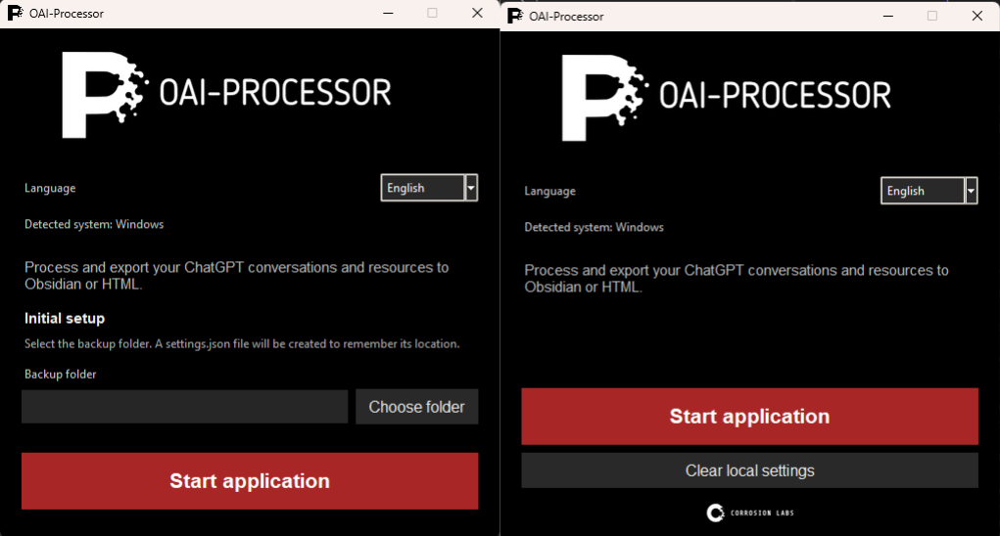
Al ejecutar OAI-Processor, aparece una ventana de inicio (launcher) desde la que se configura y arranca la aplicación.
El launcher detecta automáticamente el sistema operativo y permite seleccionar el idioma de la interfaz entre español, inglés y francés.
Primera ejecución
La primera vez que se inicia OAI-Processor, es necesario seleccionar la carpeta que contiene la copia de seguridad de ChatGPT.
Mediante el botón Seleccionar carpeta, el usuario indica la ubicación del backup que desea procesar.
Al pulsar Iniciar aplicación, se guarda esta ubicación en un archivo settings.json, que permite recordarla en futuras ejecuciones.
Este archivo se almacena en la carpeta de configuración local del sistema operativo, independientemente de los datos del backup.
Ejecuciones posteriores
Una vez configurada la aplicación, el launcher presenta una ventana simplificada con dos opciones:
Iniciar aplicación: abre OAI-Processor utilizando la configuración guardada.
Borrar configuración local: elimina la configuración almacenada, previa confirmación, sin borrar las copias de seguridad, los archivos procesados ni las exportaciones.
Después de borrar la configuración, el launcher vuelve a mostrar la pantalla de configuración inicial para seleccionar una nueva carpeta.
Importante: borrar la configuración local no equivale a eliminar los datos de trabajo ni a desinstalar la aplicación.
Conexión con la copia de seguridad
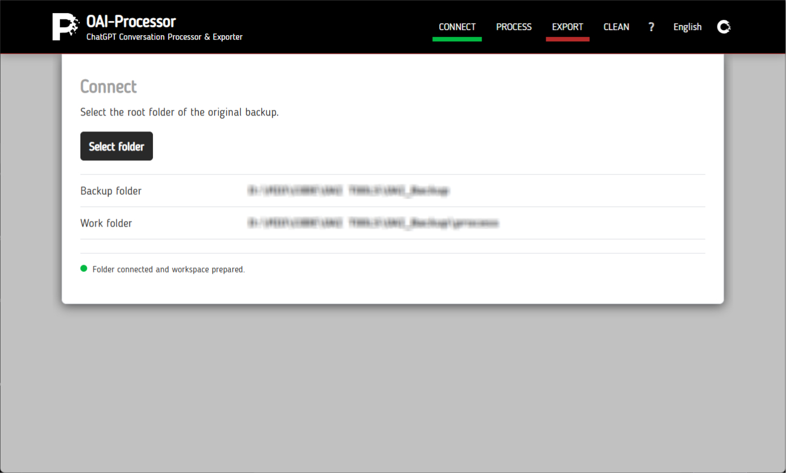
La pantalla Conectar permite seleccionar la carpeta raíz del backup de ChatGPT que utilizaremos como origen de los datos.
Esta carpeta debe contener la copia de seguridad original, obtenida mediante OAI-Downloader.
Selección de la carpeta
El botón Seleccionar carpeta abre el explorador de archivos para elegir la ubicación del backup.
Una vez seleccionada, OAI-Processor muestra dos rutas:
Carpeta del backup: ubicación de los archivos originales descargados.
Carpeta de trabajo: directorio
process, donde se almacenará la información procesada por la aplicación.
Si la carpeta de trabajo no existe, el programa la crea automáticamente.
Estado de conexión
En la parte inferior aparece un indicador que informa del estado de la conexión.
El indicador verde confirma que la carpeta se ha seleccionado correctamente y que el espacio de trabajo está preparado.
Esta operación no procesa todavía los datos. Únicamente establece su ubicación y prepara el entorno para la siguiente etapa.
Navegación
La barra superior organiza el funcionamiento de OAI-Processor en cuatro secciones:
Conectar: seleccionar la copia de seguridad.
Procesar: analizar y preparar la información.
Exportar: generar los archivos en el formato seleccionado.
Limpiar: eliminar datos de trabajo generados por la aplicación.
Los indicadores de color muestran el estado de cada etapa:
Verde: etapa completada.
Naranja: etapa en curso.
Rojo: etapa pendiente o bloqueada.
El programa sigue un proceso secuencial: las etapas que dependen de operaciones anteriores permanecen bloqueadas hasta que estas se completan.
Procesamiento de la información
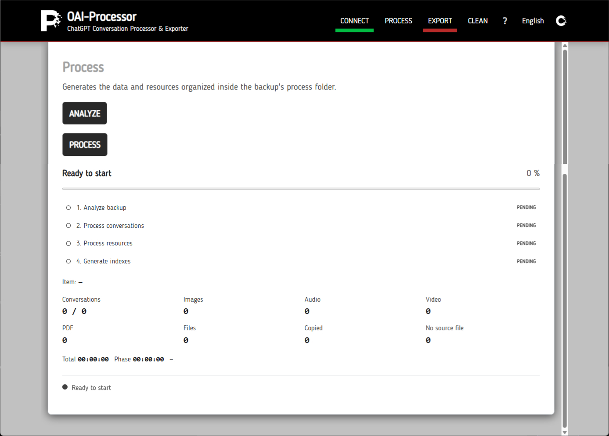
La sección Procesar constituye la primera de las dos etapas principales de OAI-Processor.
Su función es analizar la copia de seguridad, organizar las conversaciones y sus recursos y generar una estructura de datos preparada para su posterior exportación.
El procesamiento no modifica los archivos originales del backup. Los resultados se almacenan en la carpeta de trabajo process.
Análisis del backup
El botón Analizar examina el contenido de la copia de seguridad y determina qué proyectos y conversaciones están disponibles.
Este análisis permite identificar la información nueva, modificada o previamente procesada, evitando repetir innecesariamente operaciones.
Una vez completado, se puede seleccionar qué proyectos se desean procesar.
Inicio del procesamiento
El botón Procesar inicia la preparación de los proyectos seleccionados.
El programa realiza cuatro operaciones principales, representadas en el indicador de etapas.
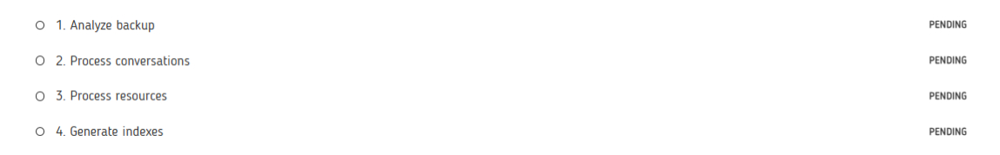
02a · Etapas del procesamiento
Analizar backup: examina la información de origen y prepara los datos necesarios para el procesamiento.
Procesar conversaciones: extrae y organiza los mensajes y contenidos de las conversaciones.
Procesar recursos: identifica y prepara las imágenes, audios, vídeos, documentos y otros archivos asociados.
Generar índices: construye los índices que permiten localizar y relacionar proyectos, conversaciones y recursos durante la exportación.
Cada etapa dispone de un indicador visual que muestra si está pendiente, en ejecución o completada.
Seguimiento del progreso
Durante el procesamiento, la interfaz muestra una barra de progreso, el porcentaje completado y el elemento en el que está trabajando la aplicación.
También se presentan los tiempos transcurridos, tanto del proceso completo como de cada fase.
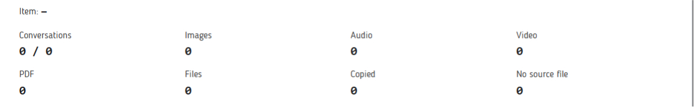
02b · Contadores de procesamiento
Los contadores permiten conocer la cantidad y el tipo de información que está gestionando OAI-Processor:
Conversaciones: número de conversaciones procesadas respecto al total.
Imágenes: recursos de imagen identificados.
Audio: archivos de audio identificados.
Vídeo: archivos de vídeo identificados.
PDF: documentos PDF identificados.
Archivos: otros archivos asociados a las conversaciones.
Copiados: recursos que se han copiado a la estructura de trabajo.
Sin archivo de origen: recursos referenciados en el backup cuyo archivo original no está disponible.
Estos indicadores ayudan a comprobar el avance del procesamiento y detectar posibles recursos ausentes.
Finalización del procesamiento
Cuando termina el procesamiento, la información queda organizada dentro de la carpeta process y preparada para la segunda etapa: Exportar.
Una vez procesada una copia de seguridad, es posible generar diferentes exportaciones a partir de esos mismos datos, sin necesidad de repetir el procesamiento mientras la información de origen no haya cambiado.
Selección de proyectos
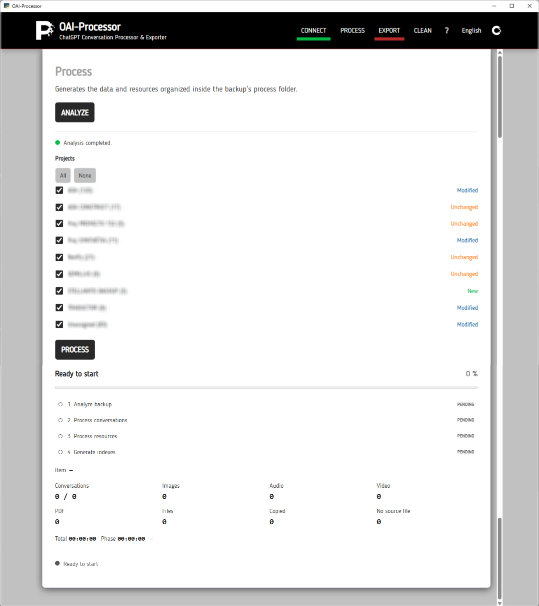
Una vez completado el análisis del backup, OAI-Processor muestra la relación de proyectos disponibles y permite seleccionar cuáles se desean procesar.
Esta función permite trabajar con proyectos concretos sin necesidad de procesar toda la copia de seguridad.
Estado de los proyectos
Junto a cada proyecto aparece un indicador que identifica su estado respecto al análisis anterior:
Nuevo (verde): proyecto que no figuraba en el análisis de referencia.
Modificado (azul): proyecto que contiene cambios detectados respecto a la información previamente registrada.
Sin cambios (naranja): proyecto para el que no se han detectado modificaciones.
Estos estados permiten identificar rápidamente qué proyectos contienen información nueva o actualizada.
Selección de proyectos
Cada proyecto dispone de una casilla de selección.
Los botones situados encima de la lista facilitan la selección:
Todos: selecciona todos los proyectos disponibles.
Ninguno: desmarca todos los proyectos.
También es posible seleccionar o desmarcar individualmente cada proyecto.
Inicio del procesamiento
Una vez elegidos los proyectos, el botón Procesar inicia el tratamiento de la información seleccionada.
La aplicación muestra el progreso mediante las cuatro etapas descritas anteriormente, junto con los contadores de conversaciones y recursos.
Importante: el estado «Sin cambios» no impide seleccionar un proyecto. La selección determina qué proyectos participarán en el procesamiento y, posteriormente, en las exportaciones.
Finalización del procesamiento
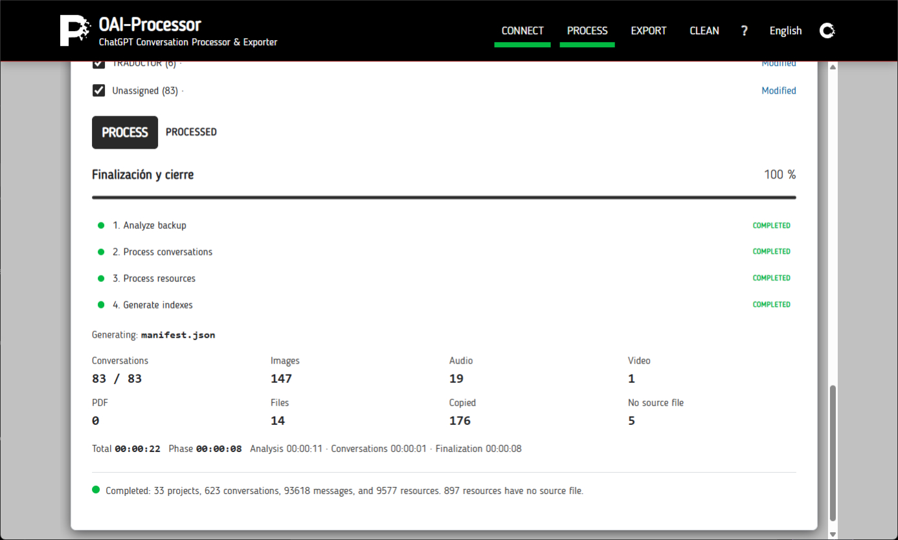
Cuando OAI-Processor termina de procesar los proyectos seleccionados, la barra de progreso alcanza el 100 % y las cuatro etapas aparecen marcadas en verde, indicando que han finalizado correctamente.
El programa presenta un resumen de la operación, con información sobre los datos procesados y los recursos encontrados.
Resultado del procesamiento
En la parte inferior se muestra un informe general que incluye:
Proyectos: número total de proyectos procesados.
Conversaciones: cantidad de conversaciones tratadas.
Mensajes: número total de mensajes procesados.
Recursos: cantidad de archivos y recursos identificados.
Recursos sin archivo de origen: elementos referenciados en las conversaciones cuyo archivo original no se encuentra disponible en el backup.
La existencia de recursos sin archivo de origen no implica necesariamente que el procesamiento haya fallado. Puede tratarse de archivos que no estaban disponibles en la copia de seguridad original.
Estadísticas y tiempos
Los contadores muestran el número de imágenes, audios, vídeos, documentos y otros archivos procesados, así como los recursos copiados.
También se presenta el tiempo total de ejecución y la duración de las distintas fases, lo que permite conocer el coste del procesamiento.
Información generada
Durante esta operación, OAI-Processor crea y actualiza los archivos de trabajo necesarios para organizar las conversaciones y sus recursos.
Entre ellos se encuentran los índices y manifiestos, como manifest.json, que permiten identificar y relacionar los elementos procesados.
Toda esta información se conserva dentro de la carpeta process, sin modificar los archivos originales del backup.
Siguiente etapa
Una vez finalizado el procesamiento, la sección Exportar queda disponible.
A partir de este momento, los datos pueden convertirse a los formatos compatibles con OAI-Processor, utilizando las opciones de exportación que se describen en los siguientes apartados.
Importante: no es necesario repetir el procesamiento para cambiar de formato o realizar una nueva exportación de los mismos datos, siempre que la información de origen no haya cambiado.
Exportación de la información
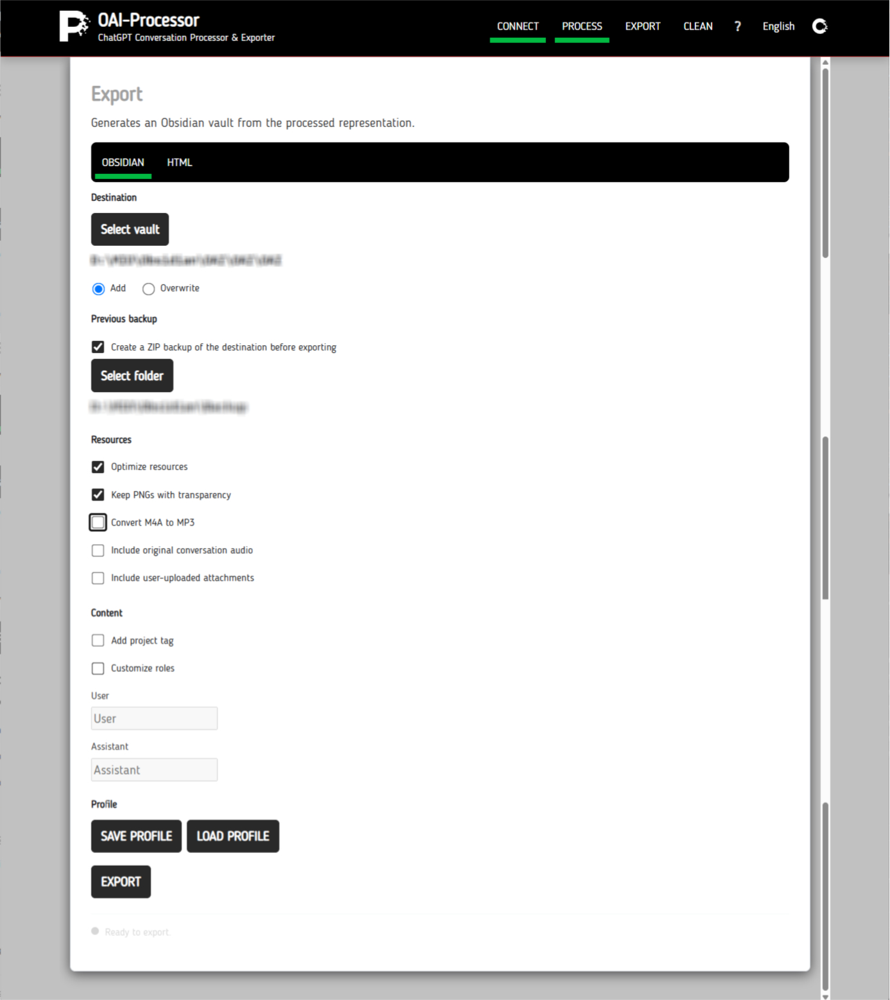
La sección Exportar constituye la segunda etapa principal de OAI-Processor.
Una vez procesada la información, el programa permite generar documentos y recursos organizados en diferentes formatos, sin necesidad de repetir el procesamiento.
Esta pantalla reúne las opciones que determinan el destino, el tratamiento de los recursos y la presentación del contenido exportado.
05a · Formato de exportación
OAI-Processor dispone de dos formatos:
Obsidian: genera documentos Markdown y organiza los recursos para integrarlos en una vault de Obsidian.
HTML: genera documentos HTML para consultar las conversaciones fuera de ChatGPT.
Ambas opciones utilizan la información preparada durante la etapa de procesamiento.
05b · Carpeta de destino
En la exportación a Obsidian, el botón Seleccionar vault permite indicar la carpeta donde se incorporarán los documentos y recursos.
Puede seleccionarse una vault existente, incluidos sus contenidos previos.
La ruta elegida aparece debajo del botón.
05c · Modo de escritura
Existen dos modos para incorporar los archivos a una vault de Obsidian:
Añadir: incorpora la información exportada sin sobrescribir los archivos existentes. Cuando es necesario evitar una colisión de nombres, se genera un nombre alternativo.
Sobrescribir: permite actualizar los archivos previamente gestionados por OAI-Processor cuando han cambiado. Los archivos modificados por el usuario se protegen frente a sobrescrituras automáticas.
La aplicación utiliza la información de sus manifiestos para identificar los archivos gestionados y determinar cómo tratarlos.
Importante: «Sobrescribir» no significa eliminar o reemplazar indiscriminadamente el contenido de la vault. La aplicación distingue los archivos gestionados de los ajenos y contempla los posibles conflictos.
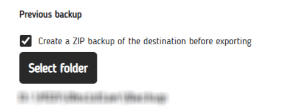
05d · Copia de seguridad previa
La opción Crear una copia ZIP del destino antes de exportar permite generar una copia de seguridad de la carpeta de destino antes de introducir modificaciones.
Al activarla, debe seleccionarse una carpeta donde guardar el archivo ZIP.
Esta opción resulta especialmente recomendable cuando se exporta a una vault de Obsidian que ya contiene documentos, enlaces o modificaciones realizadas por el usuario.
La copia se realiza antes de comenzar la exportación.
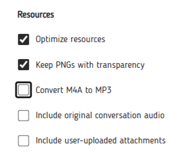
05e · Tratamiento de recursos
Estas opciones determinan cómo se preparan determinados archivos multimedia y adjuntos.
Optimizar recursos: activa las conversiones de recursos compatibles para reducir el espacio ocupado por los archivos exportados.
Conservar PNG con transparencia: evita perder la transparencia de las imágenes PNG que la contienen.
Convertir M4A a MP3: convierte los archivos de audio M4A al formato MP3.
Incluir audio original de las conversaciones: incorpora los archivos de audio originales asociados a las conversaciones.
Incluir archivos adjuntos del usuario: incorpora los archivos que el usuario haya adjuntado a las conversaciones, cuando estén disponibles en el backup.
Estas opciones afectan a la exportación, no a los archivos originales.
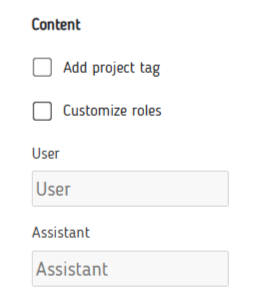
05f · Opciones de contenido
Permiten personalizar determinados elementos de los documentos generados.
Añadir etiqueta de proyecto
Incorpora una etiqueta que identifica el proyecto al que pertenece una conversación.
Personalizar roles
Permite sustituir las denominaciones predeterminadas de los participantes:
Usuario: nombre que aparecerá en los mensajes del usuario.
Asistente: nombre que aparecerá en los mensajes de ChatGPT.
Por ejemplo, pueden utilizarse nombres personalizados en lugar de las etiquetas genéricas «Usuario» y «Asistente».
05g · Perfiles de exportación
Los perfiles permiten guardar y recuperar conjuntos de opciones de exportación.
Resultan útiles cuando se realizan exportaciones frecuentes con la misma configuración.
Guardar perfil: almacena las opciones seleccionadas bajo un nombre.
Cargar perfil: permite recuperar una configuración guardada anteriormente.
05h · Guardar un perfil
Al pulsar Guardar perfil, aparece una ventana donde se introduce el nombre de la configuración.
El botón Guardar registra el perfil para utilizarlo posteriormente.
El botón Cancelar cierra la ventana sin guardar cambios.
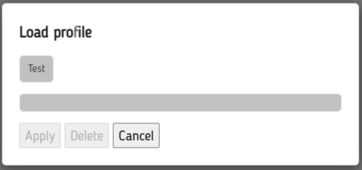
05i · Seleccionar un perfil
La ventana Cargar perfil presenta los perfiles disponibles.
Al seleccionar uno de ellos, se muestran sus opciones y se habilitan las operaciones correspondientes.
Hasta que se selecciona un perfil, los botones Aplicar y Eliminar permanecen deshabilitados.
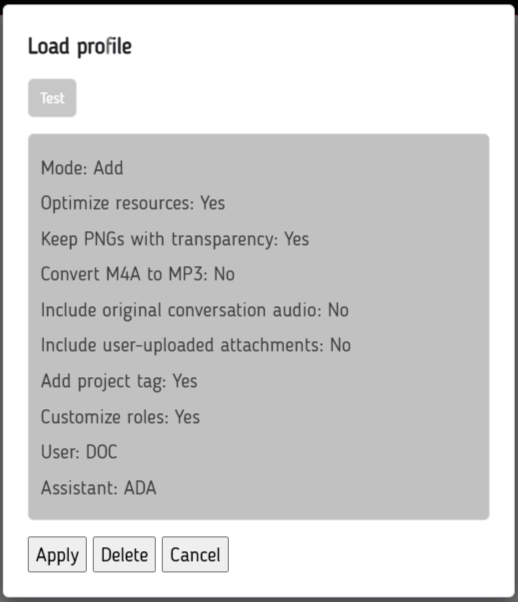
05j · Consultar y aplicar un perfil
Una vez seleccionado un perfil, la ventana muestra un resumen de sus parámetros: modo de escritura, opciones multimedia, etiquetas y nombres personalizados.
Desde esta ventana pueden realizarse tres operaciones:
Aplicar: recupera la configuración del perfil seleccionado.
Eliminar: borra el perfil guardado.
Cancelar: cierra la ventana sin aplicar cambios.
Los perfiles permiten reutilizar configuraciones sin tener que seleccionar manualmente todas las opciones en cada exportación.
05k · Iniciar la exportación
Una vez seleccionado el formato, el destino y las opciones correspondientes, el botón Exportar inicia el procedimiento.
La aplicación prepara los documentos y recursos necesarios y, en el caso de Obsidian, continúa con las operaciones de incorporación a la vault.
Durante la ejecución se muestra el progreso de las distintas fases.
Importante: el procesamiento y la exportación son operaciones independientes. Una misma información procesada puede exportarse varias veces utilizando diferentes formatos, destinos o perfiles.
Métodos de exportación a Obsidian
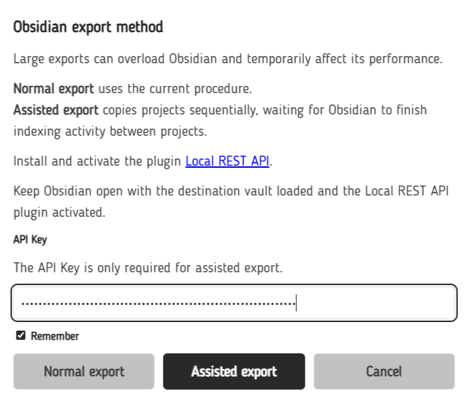
Antes de incorporar los archivos a una vault de Obsidian, OAI-Processor permite elegir entre dos métodos de exportación.
Advertencia sobre exportaciones grandes: cuando se incorporan miles de conversaciones y recursos de una sola vez, Obsidian puede saturarse al intentar indexar todos los archivos simultáneamente. Esto puede provocar ralentizaciones extremas, bloqueos temporales e incluso que la aplicación deje de responder, especialmente durante la primera importación.
Para reducir este riesgo, OAI-Processor ofrece dos procedimientos:
Exportación normal
La opción Exportación normal utiliza el procedimiento habitual de copia de archivos.
Es el método más sencillo y no requiere instalar complementos adicionales en Obsidian.
Exportación asistida
La opción Exportación asistida está pensada para exportaciones grandes.
En lugar de incorporar todos los proyectos de forma continua, OAI-Processor los copia secuencialmente y espera a que Obsidian termine su actividad de indexación entre proyectos.
Este procedimiento permite reducir la carga sobre Obsidian durante la incorporación de grandes cantidades de documentos y recursos.
Para utilizarlo es necesario:
Instalar y activar el complemento Local REST API en Obsidian.
Mantener Obsidian abierto con la vault de destino cargada.
Introducir la clave de acceso (API Key) proporcionada por el complemento.
La API Key solo es necesaria para la exportación asistida.
Recordar la clave de acceso
La casilla Recordar permite conservar la API Key para futuras exportaciones, evitando tener que introducirla cada vez.
Importante: la clave se guarda localmente de forma ofuscada, pero no cifrada. Por tanto, cualquier persona con acceso al archivo de configuración podría recuperarla.
Selección del método
La ventana dispone de tres botones:
Exportación normal: continúa utilizando el procedimiento habitual.
Exportación asistida: inicia el procedimiento secuencial mediante Local REST API.
Cancelar: cierra la ventana sin iniciar la incorporación de archivos a Obsidian.
Ambos métodos utilizan la información previamente procesada y las opciones de exportación seleccionadas. La diferencia está en cómo se incorporan los archivos a la vault de destino.
Progreso de la exportación
Una vez iniciada la exportación, OAI-Processor muestra el avance de las operaciones necesarias para generar los documentos y recursos correspondientes al formato seleccionado.
La interfaz permite seguir cada fase del procedimiento, consultar los archivos que se están tratando y comprobar las estadísticas de la exportación.
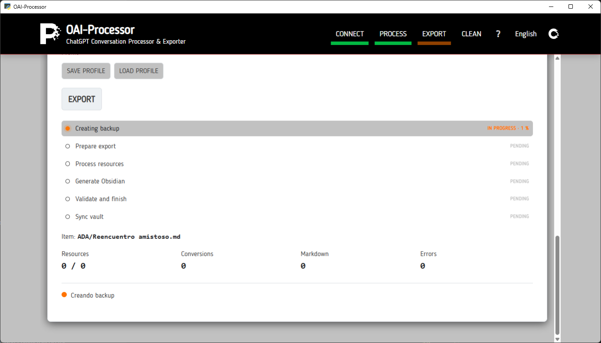
07a · Inicio de la exportación
La aplicación divide la exportación a Obsidian en seis etapas:
Crear backup: genera una copia ZIP de la carpeta de destino, si se ha activado esta opción.
Preparar exportación: organiza la información procesada y prepara la estructura necesaria.
Procesar recursos: prepara y convierte los archivos multimedia según las opciones seleccionadas.
Generar Obsidian: crea los documentos Markdown y organiza los recursos destinados a la vault.
Validar y finalizar: comprueba los resultados de la exportación y completa los archivos necesarios.
Sincronizar vault: incorpora los documentos y recursos generados a la vault de destino.
Cada etapa presenta un indicador que permite identificar su estado:
Naranja: operación en curso.
Verde: operación completada.
Gris: operación pendiente.
El porcentaje situado a la derecha indica el avance de cada etapa.
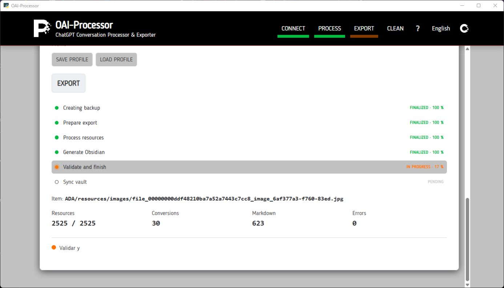
07b · Seguimiento de recursos y validación
A medida que avanza la exportación, las etapas completadas aparecen marcadas en verde y la aplicación continúa automáticamente con las siguientes.
En la zona inferior se muestran cuatro contadores:
Recursos: cantidad de recursos preparados respecto al total.
Conversiones: número de conversiones de archivos realizadas.
Markdown: cantidad de documentos Markdown generados.
Errores: número de errores registrados durante la operación.
También se muestra la ruta del archivo o recurso que se está procesando.
Durante la fase Validar y finalizar, el programa comprueba los resultados generados antes de continuar con la sincronización de la vault.
Consideraciones sobre el tiempo de ejecución
La duración de la exportación depende principalmente de la cantidad de conversaciones, el volumen de recursos y las opciones de conversión seleccionadas.
La creación de una copia ZIP de una vault grande también puede requerir bastante tiempo.
En determinadas fases, el progreso puede avanzar lentamente mientras se trabaja con archivos grandes o se realizan operaciones de validación.
Importante: no debe cerrarse la aplicación mientras la exportación esté en curso. Es recomendable esperar a que finalicen todas las etapas y aparezca el resultado correspondiente.
Limpieza de datos
La sección Limpiar permite eliminar los archivos de trabajo generados por OAI-Processor sin modificar la copia de seguridad original.
Esta función resulta útil cuando se desea comenzar un nuevo procesamiento, liberar espacio en disco o eliminar los resultados de operaciones anteriores.
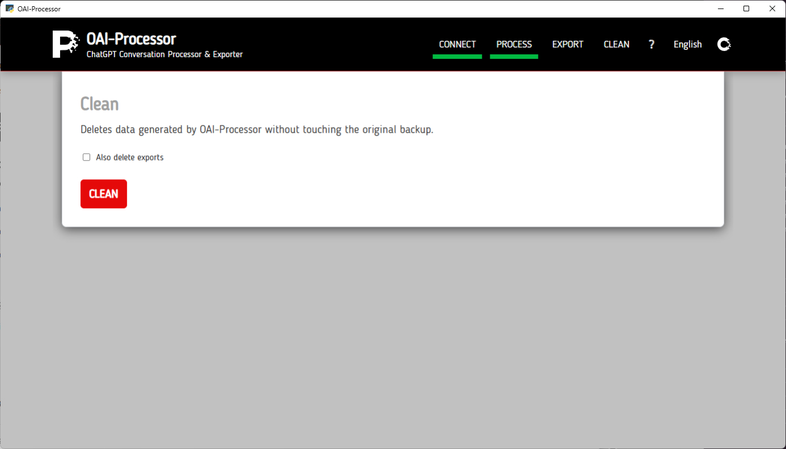
08a · Opciones de limpieza
El botón Limpiar inicia el procedimiento de eliminación de los datos generados por la aplicación.
Por defecto, se eliminan:
process/: carpeta que contiene las conversaciones, recursos e índices preparados durante el procesamiento.oai_processor.sqlite3: base de datos utilizada por OAI-Processor para registrar información sobre las operaciones realizadas.
La casilla Eliminar también las exportaciones permite ampliar la limpieza a la carpeta export/, donde se encuentran los archivos generados durante las exportaciones.
Si esta opción permanece desactivada, los archivos de exportación se conservan.
Importante: la limpieza no elimina la copia de seguridad original ni los archivos que ya se hayan incorporado a una vault externa de Obsidian.
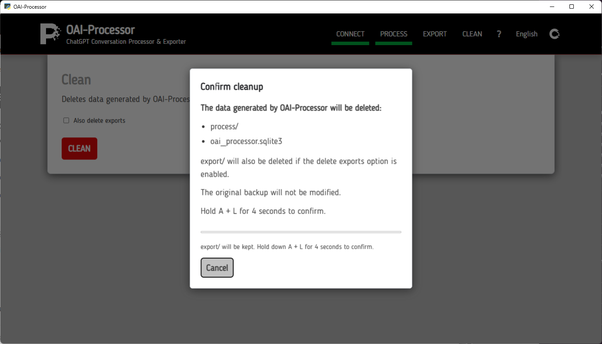
08b · Confirmación de seguridad
Para evitar eliminaciones accidentales, OAI-Processor presenta una ventana de confirmación antes de iniciar la limpieza.
Esta ventana informa de las carpetas y archivos que se eliminarán y recuerda que el backup original permanecerá intacto.
La confirmación requiere mantener pulsadas simultáneamente las teclas A + L durante cuatro segundos.
Una barra de progreso muestra el tiempo durante el que se mantiene la combinación.
Si se sueltan las teclas antes de completar los cuatro segundos, la confirmación no se realiza.
El botón Cancelar permite cerrar la ventana sin eliminar ningún archivo.
Después de la limpieza
Una vez completada la operación, los datos de trabajo seleccionados dejan de estar disponibles.
Para generar nuevas exportaciones será necesario procesar de nuevo la información del backup.
Advertencia: la eliminación de los archivos seleccionados es definitiva. Antes de activar la opción de borrar también las exportaciones, conviene comprobar que no contienen documentos o recursos que se deseen conservar.
Ayuda contextual
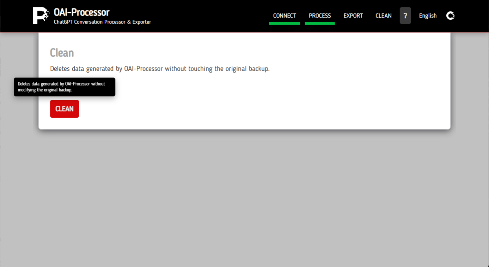
OAI-Processor incorpora un sistema de ayuda contextual que permite consultar explicaciones sobre las diferentes funciones de la aplicación sin abandonar la pantalla de trabajo.
Activación de la ayuda
El botón ?, situado en la barra superior, permite activar o desactivar este sistema.
Cuando está activado, el botón aparece resaltado y la aplicación muestra información adicional sobre los elementos que disponen de ayuda.
Funcionamiento
Al situar el cursor sobre un elemento compatible, aparece una pequeña ventana emergente con una explicación de su función.
Los mensajes de ayuda permiten conocer el propósito de determinados botones, opciones y controles sin necesidad de consultar continuamente el manual.
La ventana desaparece al retirar el cursor.
Desactivación
Para desactivar la ayuda contextual, basta con pulsar nuevamente el botón ?.
La función es exclusivamente informativa y no modifica los datos, la configuración ni las operaciones de OAI-Processor.
Selección de idioma
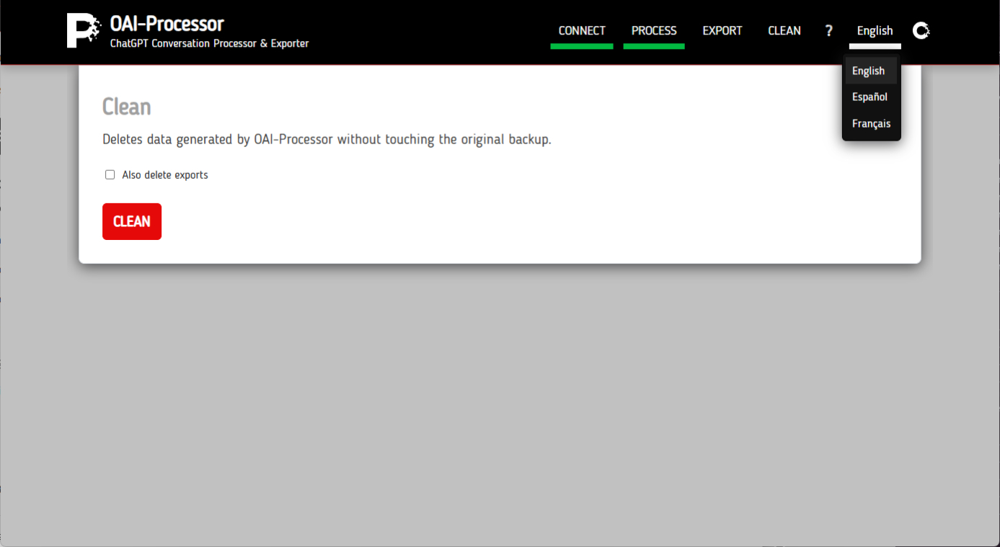
OAI-Processor dispone de una interfaz disponible en tres idiomas: inglés, español y francés.
El selector de idioma se encuentra en la barra superior de la aplicación, junto al botón de ayuda contextual.
Cambiar el idioma
Al pulsar sobre el idioma mostrado, se despliega un menú con las opciones disponibles:
English: inglés.
Español: español.
Français: francés.
Al seleccionar una opción, la interfaz se presenta en el idioma elegido.
El cambio afecta a los textos de los menús, botones, mensajes de estado, opciones de configuración y ayudas de la aplicación.
Consideraciones
El idioma seleccionado afecta únicamente a la interfaz de OAI-Processor.
No traduce las conversaciones originales ni modifica el contenido de los archivos exportados. Estos conservan el idioma en el que fueron escritos.
Información de la aplicación
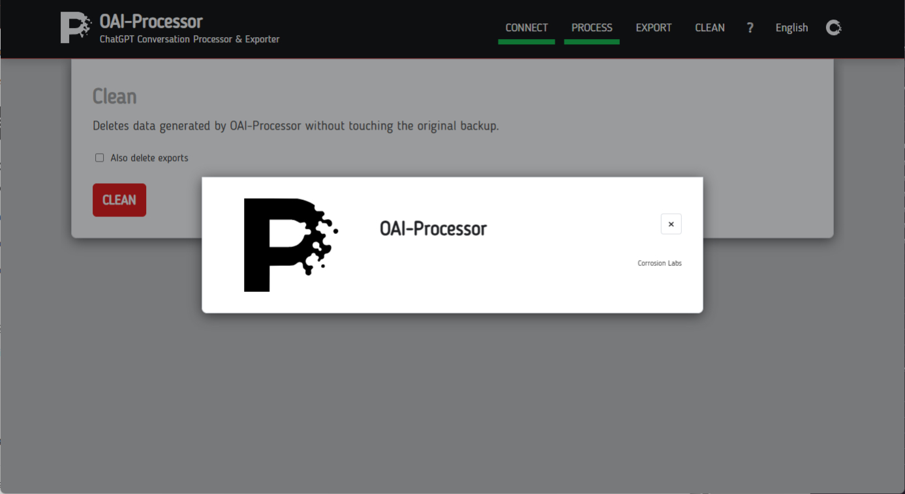
El botón con el logotipo de Corrosion Labs, situado en el extremo derecho de la barra superior, abre la ventana de información de OAI-Processor.
Esta ventana muestra el nombre de la aplicación, su logotipo y la identificación de Corrosion Labs como responsable de su desarrollo.
Para cerrarla, basta con pulsar el botón × situado en la parte derecha de la ventana.
Esta sección es exclusivamente informativa y no modifica la configuración ni los datos de la aplicación.
Introduction
What is OAI-Processor?
OAI-Processor is an application developed by Corrosion Labs for processing, organizing, and exporting ChatGPT conversations and resources into formats that can be consulted and preserved outside OpenAI's platform.
It works with local backups, particularly those obtained with OAI-Downloader, and turns their contents into organized documents while preserving projects, conversations, and associated resources.
Its workflow has two main, separate stages:
1. Processing information
OAI-Processor examines backup data and prepares it for export. It identifies projects and conversations, organizes their contents, and links associated images, audio, video, and documents.
The resulting processed structure can be reused for several exports without repeating the entire processing stage.
2. Exporting to different formats
After processing, the information can be exported to either of the currently supported formats:
- Obsidian: organized Markdown documents for integration into an Obsidian vault, retaining relationships between projects, conversations, and resources.
- HTML: an HTML version of the contents for viewing outside ChatGPT.
Export settings let you configure resources, media conversion, and selected aspects of how the contents are presented.
Why separate processing from exporting?
Processing prepares the information. Exporting determines how and where it will be used.
The same processed backup can be exported more than once, to different destinations or formats, without rebuilding all the data. OAI-Processor turns a ChatGPT backup into an organized archive that users can consult and manage independently of OpenAI's interface.
Starting and initial setup
When OAI-Processor starts, a launcher window is displayed to configure and open the application. The launcher detects the operating system and supports Spanish, English, and French.
First run
The first time you launch OAI-Processor, select the folder containing your ChatGPT backup.
Use Choose folder to locate the backup. When you select Start application, its location is saved in settings.json, so it can be remembered on later runs.
This file is stored in the operating system's local settings location, separate from the backup data.
Later runs
Once configured, the launcher presents a simpler window with two actions:
- Start application: opens OAI-Processor using the stored settings.
- Clear local settings: asks for confirmation, then removes the stored settings without deleting backups, processed data, or exports.
After clearing the settings, the launcher returns to the initial setup screen so another folder can be selected.
Important: clearing local settings is not the same as uninstalling the application or deleting working data.
Connecting to a backup
The Connect page selects the root folder of the ChatGPT backup used as the data source. This folder must contain the original backup obtained using OAI-Downloader.
Choosing the folder
Choose folder opens the file explorer. Once a backup is selected, two paths are shown:
- Backup folder: location of the original downloaded files.
- Working folder: the
processdirectory, where processed information will be stored.
The working folder is created automatically if it does not exist.
Connection status
A status indicator appears at the bottom of the screen. Green confirms that the folder has been selected and the working space is ready.
This action does not process the data yet. It only locates it and prepares the environment.
Navigation
The top navigation bar has four sections:
- Connect: choose the backup.
- Process: analyze and prepare the information.
- Export: generate files in the chosen format.
- Clean: remove generated working data.
Indicators show the stage status: green for completed, orange for running, and red for pending or locked. Dependent stages cannot be run until previous stages have completed.
Processing information
Process is the first of OAI-Processor's two main stages. It examines the backup, organizes conversations and resources, and creates the data structure used for exporting.
Original backup files are not changed. The results are stored in the process working folder.
Analyzing the backup
Analyze examines the available projects and conversations. The analysis identifies new, modified, and previously processed content so unnecessary repeat operations can be avoided.
When analysis is finished, you can select the projects to process.
Starting processing
Process starts preparing the selected projects. The application displays four main operations.
02a · Processing stages
- Analyze backup: examines source data and prepares it for processing.
- Process conversations: extracts and organizes messages and conversation contents.
- Process resources: identifies and prepares images, audio, video, documents, and other associated files.
- Generate indexes: builds indexes that locate and connect projects, conversations, and resources during exporting.
Visual indicators show whether each stage is pending, running, or complete.
Tracking progress
The application displays a progress bar, completion percentage, and current item. Both overall elapsed time and time per phase are shown.
02b · Processing counters
- Conversations: processed conversations versus total.
- Images: identified image resources.
- Audio: identified audio files.
- Video: identified video files.
- PDF: identified PDF documents.
- Files: other associated files.
- Copied: resources copied to the working structure.
- Missing source file: resources referenced in the backup whose original file is unavailable.
The counters help monitor progress and locate missing resources.
Completing processing
When processing finishes, the information in process is ready for Export. You can produce different exports from the same data without processing again, provided the source information has not changed.
Selecting projects
After analyzing the backup, OAI-Processor lists the available projects and lets you choose which ones to process. You do not have to process the whole backup.
Project status
Each project has a status relative to the reference analysis:
- New (green): not present in the reference analysis.
- Modified (blue): changes detected since the information was last recorded.
- Unchanged (orange): no changes detected.
These labels make new or updated projects easier to identify.
Project selection
Use each project's checkbox to include or exclude it. All selects every project; None clears the selection. Projects can also be chosen individually.
Starting processing
Press Process after choosing projects. The application displays the four stages and the conversation and resource counters.
Important: an Unchanged project can still be selected. Project selection determines what is processed and, subsequently, exported.
Processing complete
When processing finishes, the progress bar reaches 100% and all four stages appear green. A summary reports the processed content and resources.
Processing results
The summary lists:
- Projects: total projects processed.
- Conversations: conversations handled.
- Messages: total messages processed.
- Resources: files and resources identified.
- Missing source files: referenced resources whose original files are unavailable in the backup.
A missing source file does not necessarily mean processing failed. The resource may have been absent from the source backup.
Statistics and timing
Counters show images, audio, video, documents, other files, and copied resources. Total running time and times for individual phases are also displayed.
Generated information
OAI-Processor creates or updates working files, including indexes and manifests such as manifest.json, to connect the processed elements. Everything is stored in process; original backup files are not modified.
Next stage
Export is now available. You can generate the supported formats using the settings described below.
Important: processing does not need to be repeated merely to export the same data again to a different format, as long as the original data remains unchanged.
Exporting information
Export is the second main stage. It creates organized documents and resources from processed data without repeating processing. Settings control the destination, resource handling, and output contents.
05a · Export format
Two output formats are supported:
- Obsidian: creates Markdown documents and organizes resources for integration into an Obsidian vault.
- HTML: generates HTML documents for reading conversations outside ChatGPT.
Both use the results of the processing stage.
05b · Destination folder
For Obsidian, Select vault specifies the folder where documents and resources will be added. An existing vault may be selected, even if it already contains files. The selected path is shown below the button.
05c · Writing mode
Two modes are available for an Obsidian vault:
- Add: adds exported content without overwriting existing files. If filenames collide, an alternative name is generated when needed.
- Overwrite: updates previously managed files that have changed. User-modified files are protected from automatic overwriting.
OAI-Processor uses its manifests to recognize managed files and handle conflicts.
Important: Overwrite does not indiscriminately replace vault contents. The application distinguishes managed files from unrelated files.
05d · Backup before exporting
Create a ZIP backup of the destination before exporting copies the destination folder before making changes. Select where the ZIP should be saved.
This is especially recommended when an existing Obsidian vault already contains documents, links, or user edits. The backup is created before exporting begins.
05e · Resource handling
- Optimize resources: enables compatible conversions to reduce exported file sizes.
- Keep transparent PNGs: preserves transparency in PNG images.
- Convert M4A to MP3: converts M4A audio into MP3.
- Include original conversation audio: includes original audio associated with conversations.
- Include user attachments: includes files attached by the user when present in the backup.
These options affect exported output, not the original files.
05f · Content options
Add project tag adds a tag identifying the project of each conversation.
Customize roles changes the default labels of the participants:
- User: label shown on user messages.
- Assistant: label shown on ChatGPT messages.
You may use custom names instead of generic labels.
05g · Export profiles
Profiles save and restore sets of export settings. They are useful for recurring exports.
- Save profile: stores the selected settings under a name.
- Load profile: retrieves a saved configuration.
05h · Saving a profile
Press Save profile, enter a name, and choose Save to store the profile. Cancel closes the dialog without saving.
05i · Choosing a profile
Load profile lists available profiles. Selecting one displays its settings and enables the relevant actions. Apply and Delete remain disabled until a profile is selected.
05j · Viewing and applying a profile
A selected profile shows its writing mode, multimedia options, tags, and custom labels.
- Apply: loads the selected settings.
- Delete: removes the saved profile.
- Cancel: closes the dialog without applying changes.
Profiles avoid having to select the same settings manually for every export.
05k · Starting an export
Choose the format, destination, and settings, then press Export. The application prepares the documents and resources; for Obsidian, it then proceeds to add them to the destination vault.
Progress is displayed throughout the operation.
Important: processing and exporting are independent. The same processed information may be exported repeatedly using different formats, destinations, or profiles.
Obsidian export methods
Before adding files to an Obsidian vault, OAI-Processor lets you choose between two methods.
Warning about large exports: when thousands of conversations and resources are added at once, Obsidian may become overloaded while indexing all the files simultaneously. This can cause extreme slowdowns, temporary freezing, or an unresponsive application, especially during the first import.
OAI-Processor offers two methods to reduce this risk:
Normal export
Normal export uses the usual file-copying procedure. It is the simplest option and does not require additional Obsidian plugins.
Assisted export
Assisted export is intended for large exports. Instead of adding all projects continuously, it copies them sequentially and waits for Obsidian to finish indexing activity between projects.
This can reduce Obsidian's load while importing large amounts of content.
To use it:
- Install and enable the Local REST API plugin in Obsidian.
- Keep Obsidian open with the destination vault loaded.
- Enter the API Key provided by the plugin.
The API Key is needed only for assisted export.
Remembering the API Key
Remember stores the API Key for later exports.
Important: the key is obfuscated locally, not encrypted. Someone with access to the settings file could recover it.
Choosing a method
- Normal export: proceeds with the standard method.
- Assisted export: starts the sequential procedure using Local REST API.
- Cancel: closes the dialog without beginning the transfer into Obsidian.
Both methods use the already processed information and chosen settings. The difference is how files are added to the destination vault.
Export progress
Once an export begins, OAI-Processor displays the operations used to generate the output documents and resources. You can track stages, current files, and statistics.
07a · Starting an export
Obsidian export is divided into six stages:
- Create backup: creates a ZIP of the destination folder when requested.
- Prepare export: organizes processed information and prepares the required structure.
- Process resources: prepares and converts media according to selected settings.
- Generate Obsidian: creates Markdown documents and organizes vault resources.
- Validate and finish: checks the output and completes required files.
- Sync vault: adds generated documents and resources to the target vault.
Indicators show orange for running, green for complete, and gray for pending. The percentage shows the progress of a stage.
07b · Resource tracking and validation
As export proceeds, completed stages turn green and the next stages start automatically.
The counters show:
- Resources: prepared resources versus total.
- Conversions: number of file conversions performed.
- Markdown: number of Markdown documents generated.
- Errors: errors recorded during the operation.
The current file or resource path is shown. During Validate and finish, the output is checked before vault synchronization.
Execution time
Duration depends on the number of conversations, resource volume, and chosen conversions. Creating a ZIP backup of a large vault may also take a considerable amount of time. Progress may move slowly when processing large files or validating output.
Important: do not close the application while export is in progress. Wait for the stages to complete and for the final result to appear.
Cleaning working data
Clean removes working files generated by OAI-Processor without altering the original backup. Use it to start processing again, free disk space, or remove results of previous operations.
08a · Cleanup options
Clean starts removing generated data. By default, the following are deleted:
process/: processed conversations, resources, and indexes.oai_processor.sqlite3: the database recording processing information.
Also delete exports additionally removes the export/ folder. If unchecked, exported files remain in place.
Important: cleanup does not remove original backup data or files already added to an external Obsidian vault.
08b · Safety confirmation
Before removing data, OAI-Processor shows a confirmation dialog describing the affected files and reminding users that the original backup will be preserved.
To confirm, hold A + L simultaneously for four seconds. A progress bar displays the elapsed hold time. Releasing the keys too early prevents confirmation.
Cancel closes the dialog without deleting files.
After cleanup
The selected working data is no longer available. A new processing run is necessary before creating fresh exports.
Warning: deletion is permanent. Before selecting the option to delete exports, make sure they contain nothing you need to keep.
Contextual help
OAI-Processor includes contextual help to explain the interface without leaving the current screen.
Turning help on
The ? button in the top bar enables or disables help. When enabled, it is highlighted and additional explanations become available for supported controls.
How it works
Hover over a supported button or option to display a small pop-up explaining its purpose. The message disappears when the pointer leaves the element.
Turning help off
Click ? again. Help is informational only and does not change application data, settings, or operations.
Language selection
The OAI-Processor interface is available in English, Spanish, and French. The menu is in the top bar next to the help button.
Changing the language
Open the current language menu and choose English, Español, or Français. Menus, buttons, status messages, settings, and help text are shown in the selected language.
Notes
The selection only changes the application's interface. It does not translate original conversations or alter the exported content.
About the application
The Corrosion Labs logo at the right of the top bar opens the information dialog. It displays the application's name, logo, and Corrosion Labs as its developer.
Close the dialog using ×. This section is informational and does not change application settings or data.